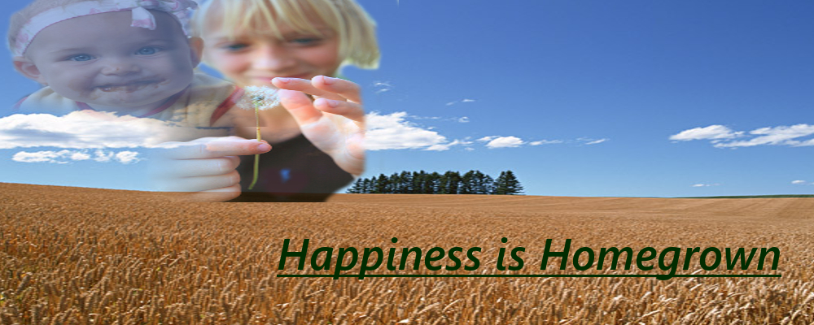
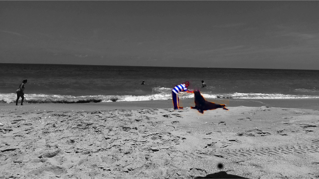

Image Projects
Project Requirements
You are a Web designer at an educational institution tasked with serving a client who is creating a website on the topic of parenting. Here is the general idea the client has provided you:
Parents are an important influence on a child’s whole life; however, not everyone knows how to be a good parent. This website will have a lot of content on it, but it needs a content-relevant
and have an attractive banner on the homepage. We have provided images that you may use in the banner: a landscape, a few pictures of children/parents. This banner needs to highlight parenting
in a soothing way and be natural to readers. We also need one icon image to serve as a site logo for each page. The icon needs to be flat looking, with a minimum number of colors used, and needs
to reflect or embody the banner idea in a visually simplified way.
Banner
For this particular project, I chose to use Gimp instead of Photoshop. I began by masking out the backgrounds from both foreground images, and then used the blending tool to make the foreground images overlap more smoothly. I was then able to add text with the text tool.
Icon
I first selected a portion of the banner that I wanted to use. After selection, I copied the portion and pasted it into a new workspace window and set the image size to 100x100. I decided to try the idea of posterizing the photo to help reduce the number of colors used. To do so, I chose 3 and let the program choose the three for me. I then pulled up the transparency tester provided for us and altered the transparency level of the icon to make sure it met the full requirements.
Image from Image Gallery
I once again, began by opening the images as layers in Gimp. From there, I went to tools and flipped the foreground image, cut foreground so only the seal and trainer were visible, and, scaled background image down to 640x360. I then highlighted the foreground image and scaled the image down to 120x72 so proportions would be a little more accurate. I then used the masking tool and desaturated the background image so that only the seal and trainer were in color and visible. To make the seal and trainer stand out more, I enhanced the color.